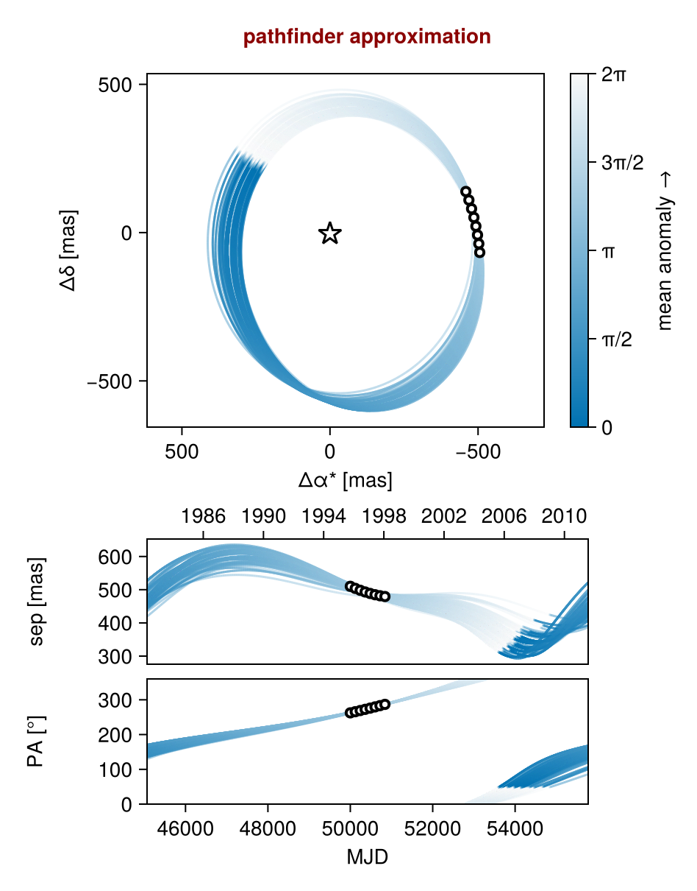
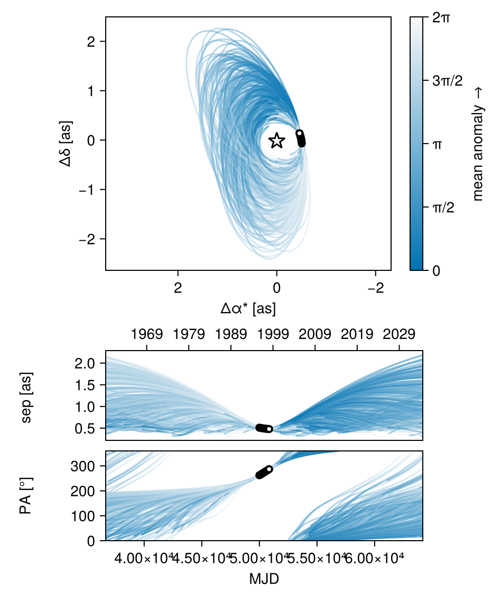
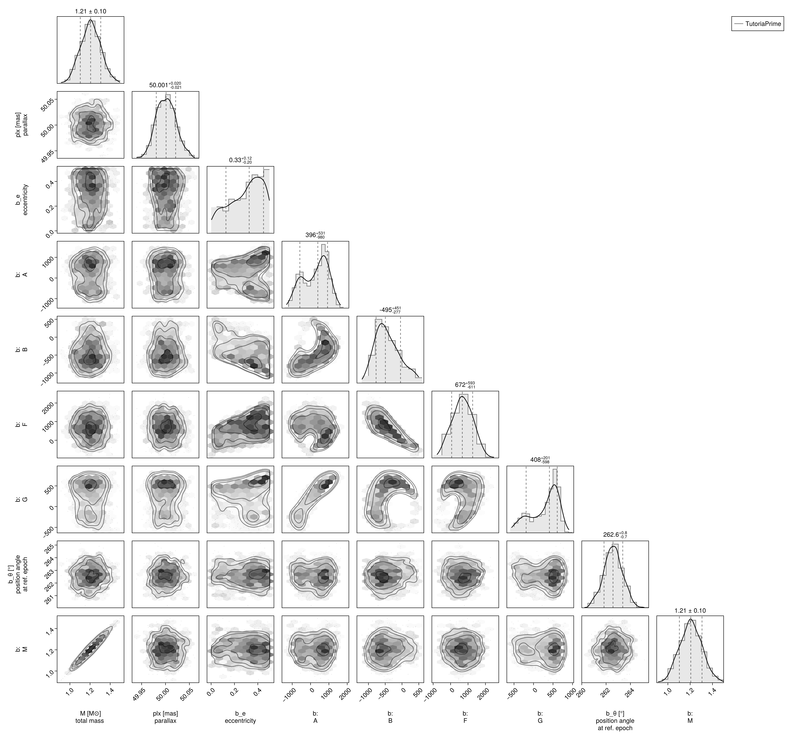
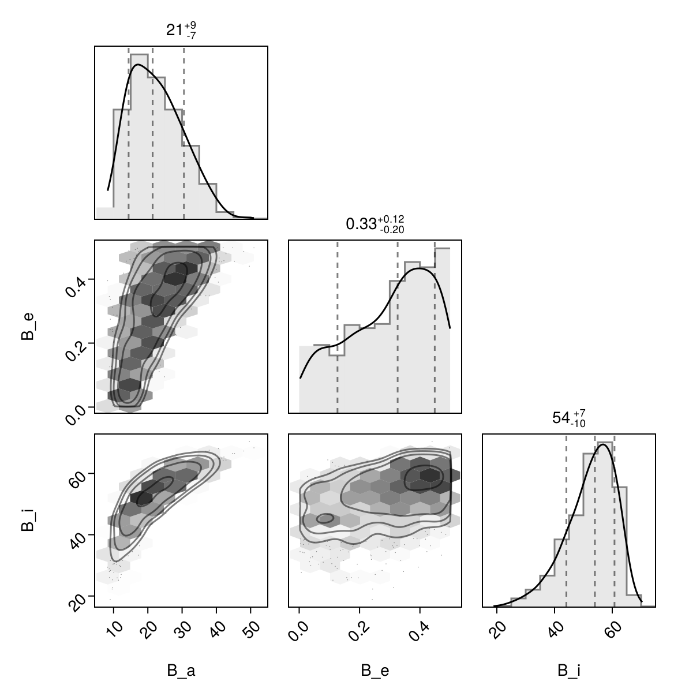

Fit with a Thiele-Innes Basis
This example shows how to fit relative astrometry using a Thiele-Innes orbital basis instead of the traditional Campbell basis used in other tutorials. The Thiele-Innes basis is more suitable then Campbell for fitting low-eccentricity orbits, because it does not have the issues where ω, Ω, and tp become degenerate as eccentricity and/or inclination fall to zero.
At the end, we will convert our results back into the Campbell basis to compare.
using Octofitter
using CairoMakie
using PairPlots
using Distributions
astrom_dat = Table(;
epoch = [50000, 50120, 50240, 50360, 50480, 50600, 50720, 50840],
ra = [-505.7637580573554, -502.570356287689, -498.2089148883798, -492.67768482682357, -485.9770335870402, -478.1095526888573, -469.0801731788123, -458.89628893460525],
dec = [-66.92982418533026, -37.47217527025044, -7.927548139010479, 21.63557115669823, 51.147204404903704, 80.53589069730698, 109.72870493064629, 138.65128697876773],
σ_ra = [10, 10, 10, 10, 10, 10, 10, 10],
σ_dec = [10, 10, 10, 10, 10, 10, 10, 10],
cor = [0, 0, 0, 0, 0, 0, 0, 0]
)
astrom_like = PlanetRelAstromLikelihood(
astrom_dat,
name = "GPI",
variables = @variables begin
# Fixed values for this example - could be free variables:
jitter = 0 # mas [could use: jitter ~ Uniform(0, 10)]
northangle = 0 # radians [could use: northangle ~ Normal(0, deg2rad(1))]
platescale = 1 # relative [could use: platescale ~ truncated(Normal(1, 0.01), lower=0)]
end
)
planet_b = Planet(
name="b",
basis=ThieleInnesOrbit,
likelihoods=[astrom_like],
variables=@variables begin
e ~ Uniform(0.0, 0.5)
A ~ Normal(0, 1000) # milliarcseconds
B ~ Normal(0, 1000) # milliarcseconds
F ~ Normal(0, 1000) # milliarcseconds
G ~ Normal(0, 1000) # milliarcseconds
M = system.M
θ ~ UniformCircular()
tp = θ_at_epoch_to_tperi(θ, 50000.0; system.plx, M, e, A, B, F, G) # reference epoch for θ. Choose an MJD date near your data.
end
)
sys = System(
name="TutoriaPrime",
companions=[planet_b],
likelihoods=[],
variables=@variables begin
M ~ truncated(Normal(1.2, 0.1), lower=0.1)
plx ~ truncated(Normal(50.0, 0.02), lower=0.1)
end
)
model = Octofitter.LogDensityModel(sys)LogDensityModel for System TutoriaPrime of dimension 9 and 9 epochs with fields .ℓπcallback and .∇ℓπcallback
Initialize the starting points, and confirm the data are entered correcly:
init_chain = initialize!(model)
octoplot(model, init_chain)
We now sample from the model as usual:
results = octofit(model)Chains MCMC chain (1000×28×1 Array{Float64, 3}):
Iterations = 1:1:1000
Number of chains = 1
Samples per chain = 1000
Wall duration = 5.11 seconds
Compute duration = 5.11 seconds
parameters = M, plx, b_e, b_A, b_B, b_F, b_G, b_θx, b_θy, b_θ, b_M, b_tp, b_GPI_jitter, b_GPI_northangle, b_GPI_platescale
internals = n_steps, is_accept, acceptance_rate, hamiltonian_energy, hamiltonian_energy_error, max_hamiltonian_energy_error, tree_depth, numerical_error, step_size, nom_step_size, is_adapt, loglike, logpost, tree_depth, numerical_error
Summary Statistics
parameters mean std mcse ess_bulk ess_tai ⋯
Symbol Float64 Float64 Float64 Float64 Float6 ⋯
M 1.2066 0.0991 0.0038 688.3043 587.308 ⋯
plx 50.0012 0.0203 0.0006 1107.9309 590.807 ⋯
b_e 0.2998 0.1408 0.0080 320.3416 449.733 ⋯
b_A 256.1907 664.9406 52.9826 170.2595 394.499 ⋯
b_B -431.0319 359.6560 38.6626 106.0154 126.399 ⋯
b_F 679.1601 580.2259 56.7728 107.5535 118.154 ⋯
b_G 280.0015 356.2617 28.2642 170.8904 179.670 ⋯
b_θx -0.1296 0.0183 0.0007 656.1294 486.843 ⋯
b_θy -0.9957 0.1026 0.0039 714.0502 593.811 ⋯
b_θ -1.7003 0.0133 0.0005 719.5862 506.898 ⋯
b_M 1.2066 0.0991 0.0038 688.3043 587.308 ⋯
b_tp 27404.3131 21379.2297 1413.0535 261.1189 473.366 ⋯
b_GPI_jitter 0.0000 0.0000 NaN NaN Na ⋯
b_GPI_northangle 0.0000 0.0000 NaN NaN Na ⋯
b_GPI_platescale 1.0000 0.0000 NaN NaN Na ⋯
3 columns omitted
Quantiles
parameters 2.5% 25.0% 50.0% 75.0% ⋯
Symbol Float64 Float64 Float64 Float64 F ⋯
M 1.0198 1.1374 1.2055 1.2749 ⋯
plx 49.9637 49.9863 50.0012 50.0155 5 ⋯
b_e 0.0209 0.1937 0.3262 0.4174 ⋯
b_A -971.6348 -338.4416 396.1961 793.4798 127 ⋯
b_B -1003.2640 -702.8269 -495.1080 -187.2423 37 ⋯
b_F -402.2779 263.7653 672.4508 1107.9964 174 ⋯
b_G -482.4138 8.5359 408.3668 559.9003 72 ⋯
b_θx -0.1682 -0.1413 -0.1289 -0.1166 - ⋯
b_θy -1.2026 -1.0610 -0.9896 -0.9315 - ⋯
b_θ -1.7269 -1.7092 -1.7005 -1.6919 - ⋯
b_M 1.0198 1.1374 1.2055 1.2749 ⋯
b_tp -20178.2613 14295.5767 32153.6362 47775.5978 4979 ⋯
b_GPI_jitter 0.0000 0.0000 0.0000 0.0000 ⋯
b_GPI_northangle 0.0000 0.0000 0.0000 0.0000 ⋯
b_GPI_platescale 1.0000 1.0000 1.0000 1.0000 ⋯
1 column omitted
Notice that the fit was very very fast! The Thiele-Innes orbital paramterization is easier to explore than the default Campbell in many cases.
We now display the results:
octoplot(model,results)
octocorner(model, results, small=false)
Conversion back to Campbell Elements
To convert our chain into the more familiar Campbell parameterization, we have to do a few steps. We start by turning the chain table into a an array of orbit objects, and then convert their type:
orbits_ti = Octofitter.construct_elements(model, results, :b, :) # colon means all rows1000-element Vector{ThieleInnesOrbit{Float64}}:
ThieleInnesOrbit{Float64}(0.22733872883235542, 49314.33797676607, 1.3336605102081167, 49.94679997249787, -269.14114311701036, -674.7057449471632, 1349.3647711796846, 125.79660370171837, -24.0890273355827, -7.455680574099556, 47210.236877548086, 0.048610928163733746, 1.2603397890924721)
ThieleInnesOrbit{Float64}(0.31840997458889697, 10675.763294474855, 1.2566203036625134, 49.976808423842996, 260.5501571411816, -667.0438954982022, 1182.7775119966946, 367.3756061835798, -20.257657575568196, 1.2474453807909105, 40273.697843831855, 0.056983429789495374, 1.3907966211755547)
ThieleInnesOrbit{Float64}(0.4458082613774845, -18671.164575062867, 1.067295061492083, 50.02436451176014, 380.47572686140927, -790.5522554737572, 1622.8081806204907, 463.1473803821038, -29.025355703380836, 3.459763777518058, 69822.92651670593, 0.032867906688188654, 1.615196360234952)
ThieleInnesOrbit{Float64}(0.46205225394262084, -18466.497129902156, 1.0998615481520768, 49.98231830755677, 821.432139680653, -693.0299954516894, 1501.4958580483408, 589.5894558425442, -26.99611922663156, 12.229275119081978, 70615.47167131734, 0.03249901727101969, 1.6485852171776778)
ThieleInnesOrbit{Float64}(0.47754680407907873, -14692.343819754169, 1.147511887966777, 50.001829043515784, 1225.2405535302426, -520.8255811206038, 1179.3598336656291, 687.195978634789, -21.29111567443584, 20.421864933075604, 67872.56738694682, 0.033812385795924715, 1.6816938205468828)
ThieleInnesOrbit{Float64}(0.4855110751354793, -20949.48549404554, 1.155848918423199, 49.98558246803113, 1212.8972949367844, -507.8335848940231, 1322.5662405365983, 750.3451223910474, -24.89860168650747, 19.660416890952863, 74060.16740750661, 0.030987418929527468, 1.6992212547557322)
ThieleInnesOrbit{Float64}(0.4662892461755496, -17990.902109367642, 1.1526355707923277, 50.018425044042765, 1119.7087052568022, -487.2978560228168, 1320.0798185228605, 767.0265503266057, -25.2993692747868, 17.44740767522119, 70923.96398514391, 0.03235765888562083, 1.6575126360896935)
ThieleInnesOrbit{Float64}(0.4231906945646131, -11082.29057589535, 1.218977975453677, 50.030628575568436, 1102.7253581465927, -457.0626302852906, 1242.5275009188517, 679.3925819011437, -23.556308772265364, 17.9713148195992, 64227.83464307446, 0.03573113504761135, 1.5707802015998416)
ThieleInnesOrbit{Float64}(0.30893390789150066, 15608.630506220608, 1.1844830312477184, 49.9994455891825, 981.4405942669996, -302.1821152311381, 631.1678668378232, 564.1111874750576, -11.149291224746767, 16.108626191707135, 37914.66074425999, 0.060528919114614, 1.376255497959575)
ThieleInnesOrbit{Float64}(0.23912199175946602, 11777.64899281189, 1.2564095618710693, 49.99014364723717, 891.2603176791852, -390.8299390171332, 900.4776985288507, 485.0341889405951, -16.306626945377094, 15.042618100463756, 41701.18510773736, 0.05503281087859384, 1.2761435110655583)
⋮
ThieleInnesOrbit{Float64}(0.4185759553251628, 37245.31147475171, 1.1996168626020698, 50.01208837493508, 594.3937611845068, 52.927043598152565, -182.48908199389484, 537.7340383701364, -5.095298950901836, -6.278024212907798, 15585.06281567656, 0.14725211316690603, 1.561995589253595)
ThieleInnesOrbit{Float64}(0.4961664078048521, 11029.197680309437, 1.1566099655823254, 50.03254137916528, 1164.5382181876016, -376.1495757130178, 406.4026163862922, 677.1356569320503, 4.540737876325283, -19.228845457459432, 42142.21697185005, 0.054456874800400325, 1.723242471661742)
ThieleInnesOrbit{Float64}(0.4977858457427628, -3258.378227097346, 1.3523305414094358, 49.968233833043584, 1508.974024633657, -86.43431939504416, 526.3009771280364, 780.2154194066018, -11.12867010591238, 26.1544790096439, 57471.90758181786, 0.039931394832862344, 1.7269524775695702)
ThieleInnesOrbit{Float64}(0.4993383743235113, 12054.316147184094, 1.2880889524846948, 50.01972928000387, 1199.1990122251495, -385.46217496342763, 352.87167071655153, 667.3589752192053, 3.247772774133514, -20.419021310396687, 41176.498711174805, 0.05573405960387123, 1.7305241949504462)
ThieleInnesOrbit{Float64}(0.24264731682581372, 47291.7096934296, 1.1764911476972233, 49.99665898752686, -782.0666460831951, -702.7975425527466, 903.7425192799718, -139.25773966052174, -13.985696704540224, -17.417745593659795, 42742.33720012805, 0.053692277581874226, 1.2809284127713385)
ThieleInnesOrbit{Float64}(0.48052911630268647, 48529.855555763155, 1.2579622488296613, 50.00123581087303, -756.2231075364568, -758.2650226394402, 504.54647629312376, -482.6357463109068, -0.3837259540783031, -16.24401853330356, 32286.796785767427, 0.07107962578867501, 1.688215452637176)
ThieleInnesOrbit{Float64}(0.28833969774461515, 47356.439377199276, 1.1963679694020362, 49.99440517676081, -801.1484494658441, -730.2696335955487, 669.9490477185205, -221.04482441461607, -8.170007278315042, -18.378946802831646, 37246.93119303932, 0.06161402724840373, 1.345484887441143)
ThieleInnesOrbit{Float64}(0.4615803770342134, 47594.99035015031, 1.4349441864675898, 50.0309319489899, -1124.8909173218574, -926.8644289233379, 969.5171488891507, -281.0678315523976, -13.326490648028004, -24.884665672878562, 55289.86055393366, 0.04150731093287354, 1.6475966946353098)
ThieleInnesOrbit{Float64}(0.4440244327301486, 49022.18969954494, 0.9790313623089167, 50.00404235824781, -540.960433569677, -913.4763084457315, 1007.383168096976, -114.75037784586952, -12.542798754984796, -14.033918078527766, 45203.34196153071, 0.050769109845913506, 1.6116080107089599)Here is one of those entries:
display(orbits_ti[1])We can now make a table of results (and visualize them in a corner plot) by querying properties of these objects:
table = (;
B_a = semimajoraxis.(orbits_ti),
B_e = eccentricity.(orbits_ti),
B_i = rad2deg.(inclination.(orbits_ti)),
)
pairplot(table)
We can also convert the orbit objects into Campbell parameters:
orbits_campbell = Visual{KepOrbit}.(orbits_ti)
orbits_campbell[1]KepOrbit{Float64}
─────────────────────────
a [au ] = 28.1
e = 0.22733873
i [° ] = 63.7
ω [° ] = 253.0
Ω [° ] = 13.1
tp [day] = 49300.0
M [M⊙ ] = 1.33
period [yrs ] : 129.3
mean motion [°/yr] : 2.79
──────────────────────────
plx [mas] = 49.9
distance [pc ] : 20.0
──────────────────────────